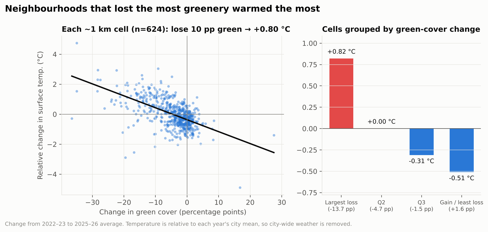
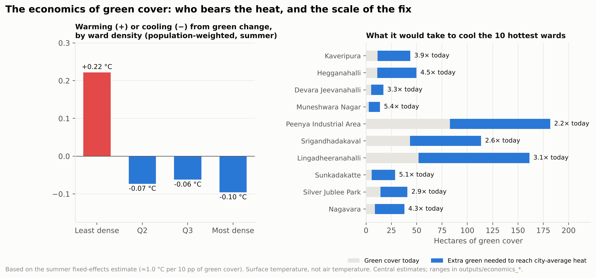

I moved to Bengaluru in 2022, and each summer since has felt harsher, in a city once known as India's
“garden city”. I wanted to test that experience against evidence: Is Bengaluru getting hotter, is it losing
green cover, and does the loss of greenery cause measurable local warming?
+2.7 °C
summer surface temperature, core city, 2022 → 2026
30% → 24%
green cover in the core city over the same period
≈ +1 °C
per 10 percentage points of green cover lost (summer, ward level)
+2.3 °C
the city vs the countryside at night (the heat island)
Key findings
Losing greenery makes neighbourhoods hotter. Losing 10 percentage points of green cover raises local summer surface
temperature by about 0.7 °C on a 1 km grid (624 cells; 95% CI 0.60–0.78) and by about 1.0 °C across the 225 BBMP
wards (CI 0.76–1.27). The result holds when farmland is excluded and when only dense built-up areas are used.
Greenery's cooling value is concentrated in summer, about 8× larger per unit of vegetation than in the dry winter,
which matters for how urban trees should be valued.
Bengaluru's heat island is a night-time phenomenon. By day the city is cooler than the dry pre-monsoon
farmland around it, but at night it stays 2.1–2.5 °C warmer, every year.
The hottest wards form an industrial belt on the western edge around Peenya: six of the ten hottest wards,
2.0–2.6 °C above the city average, with only 5–18% green cover.
Who bears it: 3.2 million people live in wards that warmed about +0.24 °C from lost greenery, and the least dense
fringe wards carry 73% of that burden. Cooling the 10 hottest wards to the city average would need roughly
3.6× their current green cover, so greening alone is unlikely to be enough.
Air quality (suggestive): wards that lost vegetation also saw higher interpolated PM2.5 (+6 µg/m³ per 0.1 drop
in vegetation index, fixed set of 7 stations; placebo p = 0.025). It's an association, likely shared with construction.

Each point is a ~1 km neighbourhood (624 in total).
Data and pipeline
A reproducible Python pipeline built entirely on free, open data, without manual steps:
Source
Used for
Volume
Landsat 8/9 (USGS)
Land surface temperature (heat), 60 m
~130 scenes
Sentinel-2 (ESA)
Vegetation index (NDVI) and green cover, 20 m
~230 scenes
MODIS Terra/Aqua (NASA)
Day and night temperature, 1 km
123 composites
BBMP ward boundaries
225 wards with census population
225 polygons
OpenAQ (CPCB stations)
PM2.5, interpolated to wards
7–13 stations
Cloud masking, seasonal median composites, geometry repair, zonal statistics, and a validated 2,250-row
ward × year × season panel in DuckDB/Parquet (8 automated data-quality checks). Fully reproducible: re-run on a second machine
with identical results.
Why the result is credible
Two-way fixed effects: each neighbourhood is compared with itself over time (removing permanent
differences), and year effects remove city-wide weather such as the 2024 drought.
Robustness: results replicate across grid and ward units, two satellites and several samples.
Honest inference: a placebo test showed ordinary p-values were over-confident for interpolated pollution
data, so I report the stricter test; the raw 5-year trend (p = 0.20) is not claimed as significant.
Limitations
Satellite surface temperature is not air temperature; the next step is validating against IMD weather stations.
The vegetation index measures greenness, not trees specifically.
Five years is short; estimates are associations under fixed-effects assumptions, not experiments.
Air-quality data are sparse (5 of 10 seasons usable).
Restoration figures extrapolate beyond the observed ward changes (±11 pp).
Ward population data are Census-2011-based.

Why this leads me to environmental economics
A first economic step is in place (above). I deliberately stopped short of a rupee figure: published damage estimates
(≈2% lower factory output per +1 °C in India; Somanathan et al., 2021) are per degree of air temperature, while I
measure surface temperature, and that link isn't established yet.
A tree's cooling is an unpriced public good: the owner who removes it captures the private gain while the neighbourhood
bears the heat, a textbook externality. What I now want to learn to answer:
What is the shadow price of urban green cover in Indian cities? How are heat costs (lost labour productivity, energy
demand, health) distributed across income groups? Which instruments, from compensatory planting rules to levies on canopy loss,
would correct the market failure? As a data engineer I can build the evidence base; through this degree I want to learn to
turn it into sound policy analysis.
Skills demonstrated: Python (xarray, geopandas, statsmodels, dask), geospatial processing (STAC, COG, GDAL),
panel econometrics, data validation, DuckDB/SQL, Git/GitHub, interactive visualisation (Plotly), GitHub Pages.
Full methodology, limitations and code: github.com/chaitrika-g/bengaluru-uhi